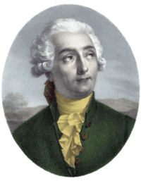
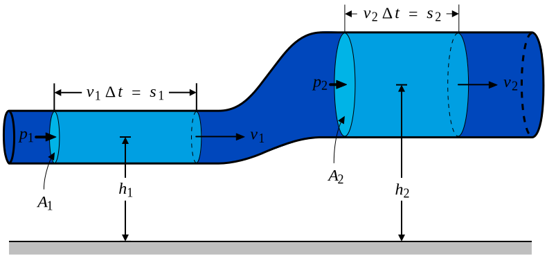
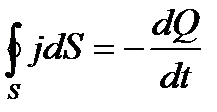
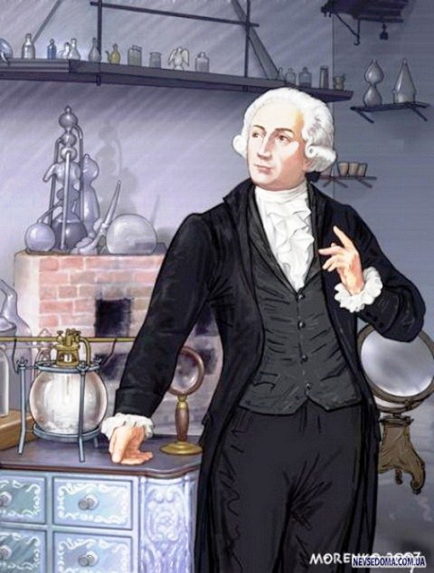
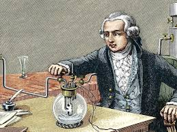

Закон збереження маси
— закон
що постулює збереження сумарної маси всіх речовин у замкненій системі,
не зважаючи на будь-які внутрішні процеси. Цей закон працює лише в класичній фізиці, коли релятивістські ефекти невеликі.
З точки зору атомно-молекулярного вчення закон збереження маси речовин пояснюється тим,
що під час хімічних реакцій загальна кількість атомів окремих елементів залишається незмінною,
бо при хімічних перетвореннях речовин атоми не зникають безслідно і не утворюються з нічого,
а тільки перегруповуються з молекул одних речовин у молекули інших речовин.
Цей закон є основним для хімії і всього природознавства. Усі хімічні перетворення в природі відбуваються згідно з ним,
і всі розрахунки в хімії ґрунтуються на ньому.
Закон збереження маси справедливий для будь-яких хімічних перетворень у замкненій системі,
але при ядерних перетвореннях він набирає специфічних рис.
Математично закон збереження маси виражається рівнянням неперервності.

Рівняння неперервності
— це співвідношення між швидкістю зміни густини матерії і її потоком.
У випадку стабільних частинок, які не виникають і не зникають,
рівняння неперервності виражає закон збереження кількості часток.
Рівння неперервності:



Антуан Лоран де Лавуазьє
( 26 серпня 1743, Париж — 8 травня 1794, Париж) — французький науковець, один із засновників сучасної хімії.
Лавуазьє походив із заможної родини. Його батько був одним з 400 адвокатів, які працювали при Паризькому парламенті,
і хотів, щоб син також став адвокатом. Однак Антуана більше притягували природничі науки,
тому він крім юриспруденції вивчав ще й астрономію, мінералогію, математику, ботаніку, геологію, і власне хімію.
Навчався у найкращих паризьких професорів.
1768 року, у віці 25 років був обраний до Французької академії наук ад'юнктом з хімії.
Через 10 років став її повноцінним членом, а 1785-го — директором.
Під час Конвенту він намагався врятувати академію, але йому це не вдалось, і 1793 року академія була ліквідована.
Гільйотинований у період Французької революції під час якобінського терору за звинуваченням
«у змові з ворогами Франції проти французького народу, який мав на меті викрасти в нації величезні суми, необхідні для війни з деспотами».
1796 року Лавуазьє був посмертно реабілітований.
В хімії закон використовують для рівння реакцій:
O2+2H2=2H2O
Де ⇑-Коефіціент
Коефіцієнти — числа, що стоять перед формулами речовин і показують число частинок даної речовини,
й використовується для зрівння атомів в реакції